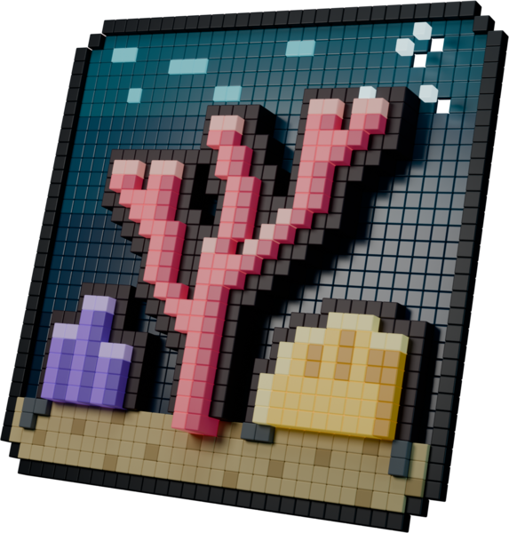
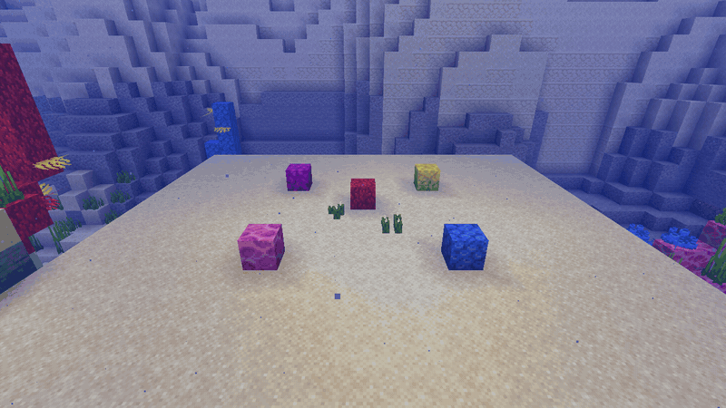
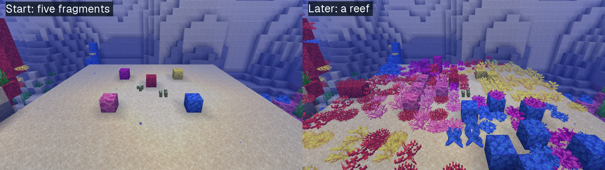
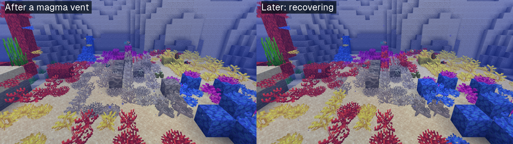
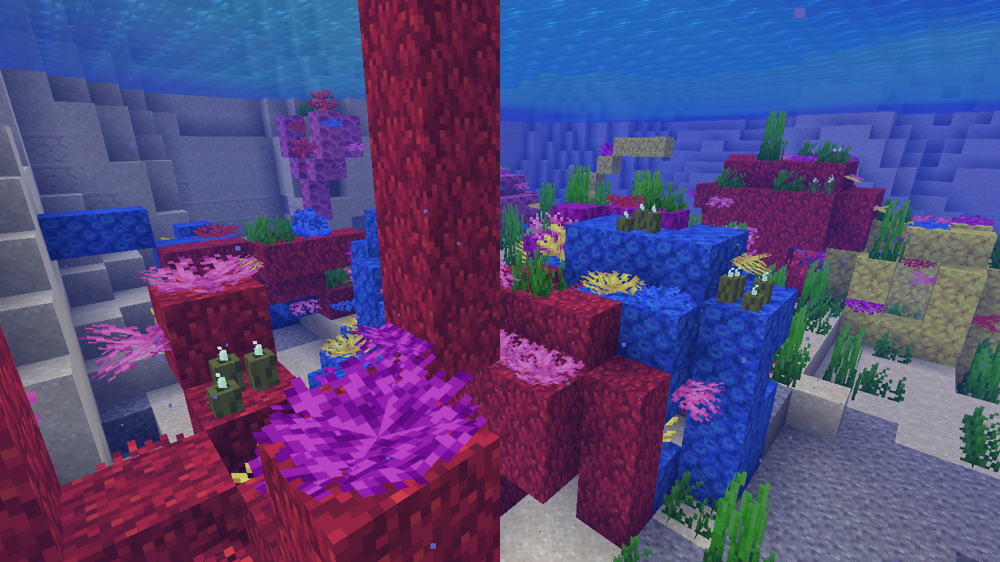
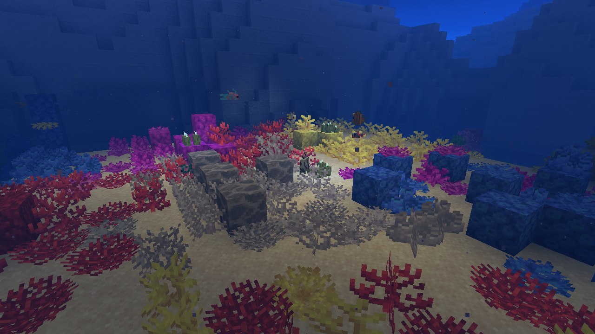

Grows its own kind
A thriving coral seeds the same species into still water within two blocks. Coral blocks build the reef up to three high; plants, fans and wall fans fill it in.

Coral reefs that grow, bleach and recover.
Coral spreads its own kind across the sea floor, turns white next to magma or in icy water, and comes back once the heat is gone. Restore a reef, farm one, or just watch it live.
Brain Coral Block at -591 51 2649 is thriving
✔ warm reef water
✔ light 10, needs 1
+ 5 tropical fish nearby (x1.5)
1 open spot to spread to
Tries to spread about every 19 min while players are near
Five coral fragments planted on cleared sand next to a natural warm ocean reef. Every block that appears is the mod at work; the time-lapse is sped up with random_tick_speed.



A thriving coral seeds the same species into still water within two blocks. Coral blocks build the reef up to three high; plants, fans and wall fans fill it in.
Install it on the server. Players join with an unmodified client: no new blocks or items, just vanilla coral that lives.
Magma or lava within two blocks, or frozen water, turns coral into its dead, white twin. Underwater magma vents leave pale scars in natural reefs.
Remove the heat and thriving coral slowly takes back dead coral of its own kind right next to it. Dry dead coral, like decoration on land, is never touched.
No new coral where 14 are already within two blocks, none closer than two blocks to the surface, and it only ever fills still water in warm oceans or near an active conduit.
Real captures from the game client, taken by the mod's capture test. Natural reef, restored reef, and the restored reef after dark.


Living coral gets random ticks, like grass and crops. Most ticks do nothing; now and then a coral looks around and acts on what it finds.
Coral thrives in warm oceans (a biome tag), or near an active conduit, with light of at least 1. In lukewarm or any other water it simply stays as it is, so coral in your aquarium is safe unless you build a conduit next to it.
New coral only fills water source blocks, on sand, gravel, stone, clay or coral (a block tag). It never replaces a block, and it keeps two blocks of open water above it.
It runs on random ticks, so it only happens within simulation distance, follows random_tick_speed and stops under /tick freeze. At default speed a thriving coral tries to spread about every half hour.
The reef is the world: every change is a vanilla coral block. There is no extra save data to break, and removing the mod leaves your reefs exactly as they are.
/livingreefs and the short alias /reef do the same thing. Look at a coral and ask it how it is doing:
> /reef check
> /reef check ~ ~-1 ~2
> /reef statsChecking and statistics are open to everyone. Reloading the config needs operator level 3 by default, or the matching node with a permissions mod.
| Command | What it does |
|---|---|
| Look at a reef | |
check [pos] | Health of the coral you look at (or at pos, within 16 blocks unless you are an admin), every condition behind it, the open spots it can spread to, and when it will next try to spread or bleach. |
stats | Coral random ticks, growth, recovery and bleaching since the server started, and the handler's own time. |
| Administer | |
reload | Reload config/livingreefs.json without a restart. |
/gamerule livingreefs:coral_growth false | Stop spreading and recovery in this world. |
/gamerule livingreefs:coral_bleaching false | Stop bleaching in this world. |
With a permissions mod, these nodes decide. Without one, the default operator levels apply.
livingreefs.uselivingreefs.adminDatapack tags decide where reefs live: livingreefs:reef_waters, frozen_waters (biomes), reef_substrate and reef_heat_sources (blocks).
config/livingreefs.json, applied with /reef reload. Chances are per coral random tick.
{
"growthChance": 0.04,
"recoveryChance": 0.04,
"bleachChance": 0.25,
"spreadRadius": 2,
"minWaterAbove": 2,
"maxNearbyCoral": 14,
"maxReefHeight": 3,
"minLight": 1,
"boosts": { "tropicalFish": 1.5,
"seaPickles": 1.5, "conduit": 2.0 },
"particles": true,
"permissionLevels": { "use": 0, "admin": 3 }
}1.9 ms
per second of game time for a warm ocean reef of 8,192 coral at default speed (median, tools/benchmark.sh). That is about 0.1 ms per tick.
Every read goes through chunks that are already loaded, so a coral at the edge of the loaded area cannot pull new terrain in.
Needs Minecraft 26.3, Fabric Loader 0.19.5 or newer, Fabric API and Java 25.
mods/ folder..minecraft/mods/.No. Living Reefs only changes vanilla coral blocks on the server, so vanilla 26.3 clients can join and see everything.
Only warm ocean floor, and slowly. Coral spreads only in warm oceans or near a conduit, never where 14 coral are already within two blocks, keeps two blocks of water above it and builds coral blocks at most three high. So reefs get no denser than natural ones, but over many hours near players they do creep across warm ocean floor. Switch growth off per world with /gamerule livingreefs:coral_growth false.
Not unless it sits next to magma or lava, or in a frozen biome. Outside warm oceans coral just stays as it is, unless you build a conduit nearby, which makes it grow.
Remove what bleached it (magma, lava), make sure there is light, then place a living coral of the same kind next to the dead coral. Thriving coral takes back dead coral of its own species right next to it. A conduit speeds everything up.
Yes, when the mod's coral extends the vanilla coral blocks and is named like vanilla coral (name_coral_block, dead_name_coral and so on). Other mods' warm ocean biomes can be added to the livingreefs:reef_waters tag.
Yes. Tested with Lithium 0.26.2: coral kept its random ticks at the expected rate and the reef grew. Mods that override the coral blocks' own random tick may take precedence.